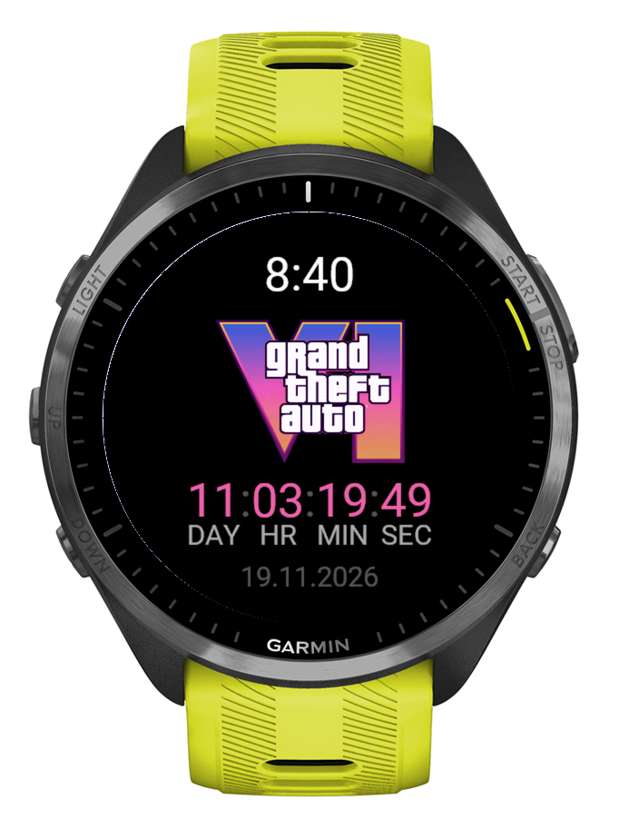
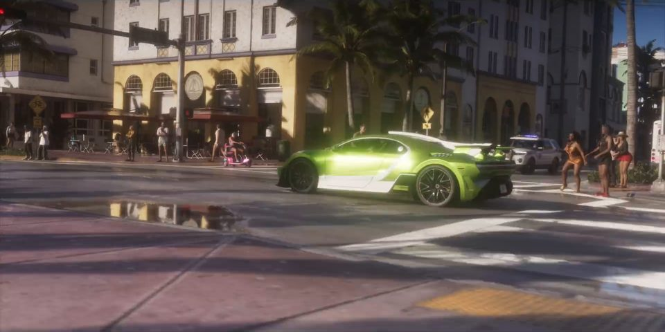
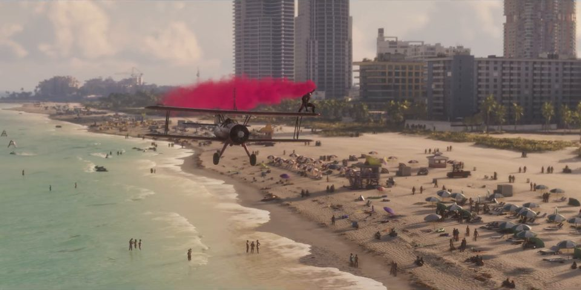

WATCH FACE
WATCH FACE
Always in sight
Time, the logo and the countdown. When you lower your wrist on an AMOLED watch, only the time and the countdown stay on, dimmed.
Connect IQ watch face + app · Forerunner · fēnix · Venu
Days, hours, minutes and seconds until 19 November 2026. A watch face, a glance and a full-screen app: use one or all three.

Install now
The Connect IQ Store review takes a few days. Until then, copy the file to your watch over USB. It takes about two minutes.
123 watches
Your watch: Forerunner 965
GTA6Countdown-fr965.prg · GTA6App-fr965.prg
Glance not supported on this watch: it needs Connect IQ 4. Open the app from the apps list instead.
Could not load the watch list. All files are on the release page below.
Pick your watch above and download the watch face, the app, or both.
Plug the watch into your computer with the USB cable.
Mac: open it in OpenMTP. Older watches also show up in Finder as a drive.
Windows: open it in File Explorer.
Copy the .prg file into the GARMIN/Apps folder.
Eject and unplug the watch. It installs the file in a few seconds.
Watch face: open the watch face settings (on most watches hold UP or MENU, then Watch Face) and pick GTA VI Countdown.
Glance: in the glance list choose Edit, then Add. Needs Connect IQ 4 or newer.
App: press START and pick GTA VI Countdown.
When the store version arrives: first delete the sideloaded .prg from GARMIN/Apps, then install from the Connect IQ Store. This way you do not get two copies.
Live · until 00:00 your time
19 November 2026 · PS5 · Xbox Series X|S


Stills from the GTA VI launch trailer · © Rockstar Games
What you get
WATCH FACE
Time, the logo and the countdown. When you lower your wrist on an AMOLED watch, only the time and the countdown stay on, dimmed.
 GLANCE
GLANCE
Press UP or DOWN on any watch face and see GTA VI · 11d 04h 18m. Your favourite watch face stays.
 APP
APP
Open it from the glance or with START. A big logo and live seconds. BACK closes it.
Setup
Find GTA VI Countdown in the Connect IQ Store and add the watch face, the app, or both.
Watch face: hold UP, choose Watch Face, then GTA VI Countdown.
Glance: scroll the glance list to the end, choose Edit, then Add.
App: press START and pick GTA VI Countdown.
On 19 November at 00:00 the countdown turns into OUT NOW and starts counting days since launch.
How it works
The countdown is plain math on the watch. No permissions, no network, no phone nearby.
The watch face redraws once a minute and shows seconds only while your wrist is up. Always-on mode lights a few pixels and moves them every minute against burn-in.
From 19 November it shows OUT NOW and the day number since release. Day one is launch day.
Questions
No. It is an unofficial fan project. It is not affiliated with or endorsed by Rockstar Games or Take-Two Interactive.
123 Garmin models with Connect IQ 3.0 or newer and a color screen: Forerunner, fēnix, epix, Enduro, Venu, vívoactive, MARQ, Descent, D2, Approach and Instinct 3 AMOLED.
The glance needs Connect IQ 4.0 or newer, for example Forerunner 965, fēnix 7 or Venu 2. On older watches the app is in the apps list.
At 00:00 on 19 November by your watch clock, in your time zone. Store unlock times can differ by region.
The date gets updated, and Connect IQ delivers the update to your watch.
No more than a regular digital watch face. It draws text once a minute, and seconds only while your wrist is up.
Privacy policy · updated 7 November 2026
The watch face and the app ask for no permissions, make no network requests and collect no data. Everything happens on the watch. This website uses Google Analytics to count visits and downloads, but only if you allow it in the banner. You can change your choice with "Analytics settings" at the bottom of the page.
Contact: belidor@icloud.com · GitHub issues